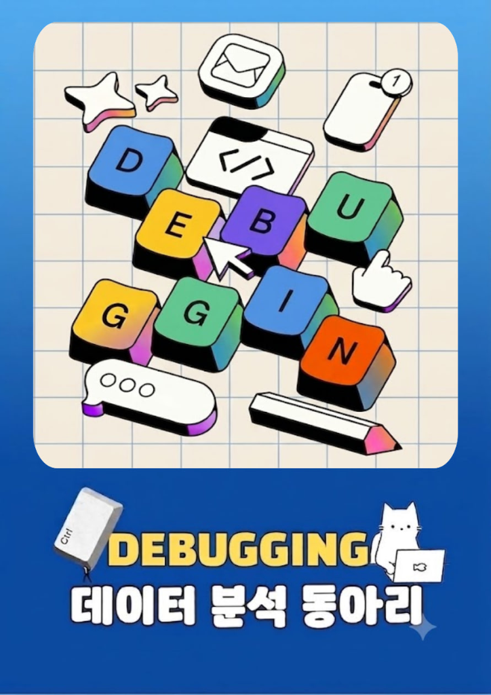

너도 나도 배우는 데이터분석,
막상 시작하려니 걱정되시나요?
저희 디버깅은 "호기심" 하나로 모여 초보/입문자도 쉽게 배울 수 있는 스터디입니다. 꼼꼼하지 못해도, 변수 이름이 헷갈려도, 에러가 계속 떠도 괜찮습니다. 경험 많은 멘토와 동료들이 곁에 있으니 천천히 함께 디버깅 해가요!

디버깅(Debugging)의
정의
프로그램의 소스 코드에서 오류(버그)를 찾아내고 수정하는 과정
오류 발견 (Detect)
"오류(버그)를 찾아내는 단계"
데이터를 추출하거나 코드를 실행할 때 발생하는 낯선 붉은색 에러 메시지를 두려워하지 않고 차근차근 짚어가는 시작점입니다.
원인 분석 (Analyze)
"오류의 원인을 규명하는 단계"
이미 코딩을 경험한 운영진들과 함께 왜 문제가 되었는지 꼼꼼하게 로그를 뜯어보며 논리적 사고를 넓혀나갑니다.
해결 및 성장 (Resolve)
"코드를 바로잡고 성장하는 단계"
발견된 에러를 수정하여 정상 동작을 완료합니다. 하나의 에러를 해결할 때마다 여러분의 실력과 데이터 분석에 대한 통찰도 커집니다.
디버깅만의
운영 방향 & 차별점
단순한 주입식 강의가 아닙니다. 편안하고 낙오자 없는 다정한 모임을 지향합니다.
스터디 운영 방향
-
부담감을 낮춘 구성
지나친 숙제나 무거운 과제 대신, 일상 속에서 즐겁게 소화할 수 있는 커리큘럼을 약속합니다.
-
낙오자가 없는 운영
진도가 조금 느려도, 이해가 한 번에 되지 않아도 멘토들이 끝까지 함께 잡아 끌어드립니다.
-
공부하기 편안한 분위기
서로 존중하고 격려하는 따뜻한 분위기 속에서 눈치 보지 않고 자유롭게 질문하고 성장합니다.
디버깅만의 차별화
포인트
-
허들높은 코딩, 더 이상은 No!
이미 코딩의 좌절을 겪고 정복해낸 친절한 선배 멘토들이 개념부터 실습 에러 해결까지 1:1로 차근차근 봐드립니다.
-
현직자 및 전공 선배들의 실무
멘토링이론에 치우치지 않고 진짜 현업이나 대외활동에서 쓰이는 알짜 꿀팁과 실무 접근법을 가르쳐 드립니다.
-
이런 분들께 강력 추천!
✔ 코딩을 처음 해보는 대학생 / 비전공자 찍먹 러
✔ 학원비는 아깝지만 분석은 제대로 다뤄보고 싶으신 분
✔ 독학하다가 에러의 장벽에 부딪혀 혼자 끙끙 앓으셨던 분
나에게 딱 맞는 3가지
수준별 반 구성
내 현재 관심사와 코딩 수준에 적합한 반을 자유롭게 선택해 보세요. (반 이동도 부담 없이 가능!)
왕초보반 (병아리 코스)
"파이썬 기초부터 튼튼히!"
- 파이썬 프로그램 설치부터 시작
- 기초 문법(변수, 조건문, 반복문 등)
- 데이터 수집 및 다루기 기초
- 데이터 분석 시각화 가볍게 찍먹
입문반 (실무 적응 코스)
"데이터 전처리와 분석 실습"
- 탐색적 데이터 분석(EDA) 이해
- 결측치·이상치 등 정제 전처리 실습
- 다양한 차트 그래프 시각화 구현
- 실전 CSV 파일 활용 연습문제 풀이
중급반 (심화 분석 코스)
"머신러닝 & 알고리즘 입문"
- 회귀 분석 및 분류 모델 지도학습
- KNN, Decision Tree 알고리즘 정복
- 통계학 기초 이론 및 머신러닝 기초
- 희망자에 한해 분석 프로젝트 공동 수행
무엇을 하며 활동하나요?
디버깅은 체계적인 모임 구성원들과 함께 다채롭게 진행됩니다.
1) 정규모임 (필수)
원하는 난이도의 반을 선택하여 주 1회 세션을 가집니다. (격주 1회 온/오프라인 참가는 필수입니다.)
2) 기타 자율모임
취향이나 필요에 따라 자격증 공부, 공모전 등 대외활동 및 친목 친사 모임을 자유롭게 직접 개설하여 멤버들과 함께 도전할 수 있습니다.
3) 특별 현업 세미나
IT 전공자 및 현업 선배님들이 직접 전해주는 포트폴리오 팁, 현무 꿀팁 등을 멘토링 세션을 통해 알짜배기로 공유받을 수 있습니다.
자주 묻는 질문
디버깅 스터디 참여에 궁금한 점을 다정하게 해결해 드립니다.
Q. 코딩을 전혀 못해도 지원
가능한가요?
네, 당연히 가능합니다! 왕초보반은 파이썬과 분석 툴을 생전 처음 조작해보는 병아리 수준의 학습자를 타깃으로 기초 명령어부터 한 자 한 자 입력해나가는 실습이 이루어집니다. 비전공자나 코딩을 전혀 못 하시는 분들도 열정만 있으시다면 누구나 기쁘게 환영합니다.
Q. 반은 어떻게 배정되나요?
지원서 작성 시 본인이 희망하는 실력별 난이도 코스를 고를 수 있습니다. 이후 스터디 세션이 시작되고 본인의 이해도나 필요도에 따라 더 쉬운 반 또는 더 높은 단계 반으로 이동할 수 있으니 부담 없이 현재 흥미에 맞는 반을 골라주시면 됩니다.
Q. 참여해야 하는 시간과 활동량은
어느 정도인가요?
기본적으로 주 1회 정기적 정규모임 스터디 세션(약 90분 ~ 120분 가량)이 진행되며, 과제와 미션은 각 반 단계에 따라 일상에 큰 지장을 주지 않도록 간단한 수준의 복습 형태로 설계되어 부담을 줄였습니다.
지금 [DEBUGGING]의
주인공이 되세요!
코딩 실력, 소속 전공, 기존 지식은 묻지도 따지지도 않습니다.
코딩 경험이 완전히 0이셔도 망설이지 말고 도전하세요!